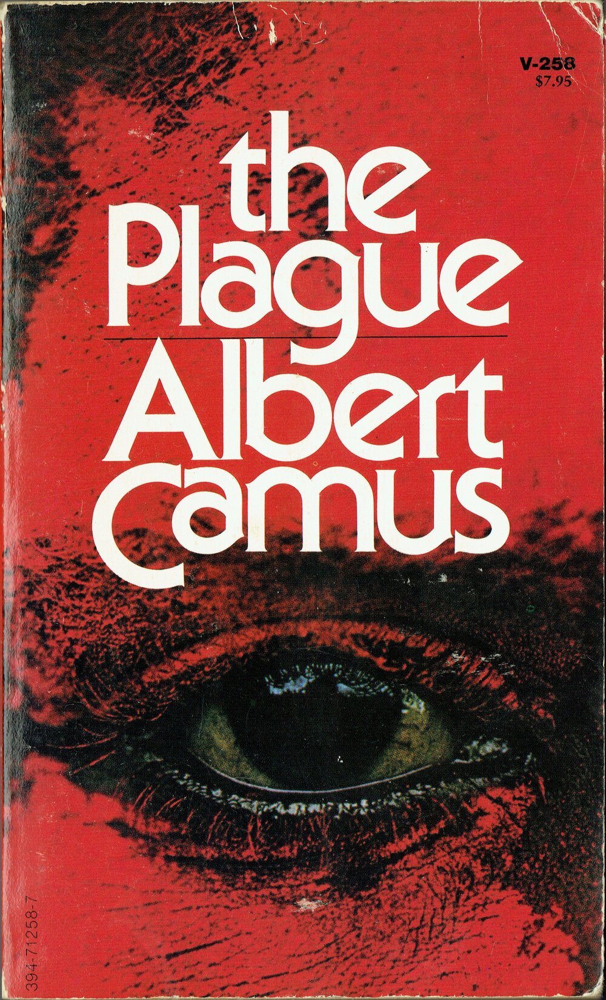

შავი ჭირი
ინფორმაცია წიგნზე
ავტორი: ალბერთ კამიუ
ჟანრი: აბსურდიზმი,ფილოსოფიური,ეგზისტენციალური
გამოშვების თარიღი: 1947 წელი
აღწერა:
ის მოგვითხრობს ამბავს საფრანგეთის ალჟირის ქალაქ ორანში გავრცელებული ჭირის მთხრობელის თვალთახედვით. მთხრობელი უცნობი რჩება ბოლო თავის, მე-5 ნაწილის მე-5 თავის დასაწყისამდე. რომანი წარმოადგენს ორანში ცხოვრების კადრს, ავტორის გამორჩეული აბსურდისტული თვალსაზრისით დანახული.
წიგნი მოგვითხრობს ადამიანის დაუოკებელ საშინელებაზე, გადარჩენაზე და გამძლეობაზე და იმაზე, თუ როგორ უპირისპირდება კაცობრიობა სიკვდილს. ჭირი ერთდროულად არის ოსტატურად შემუშავებული რომანი, მჭევრმეტყველურად შეუმჩნეველი და ეპიკური მასშტაბით და იგავი უბერებელი მორალური რეზონანსის შესახებ. , ღრმად აქტუალური ჩვენს დროში. ორანში, ზღვისპირა ქალაქში ჩრდილოეთ აფრიკაში, ჭირი იწყება, როგორც სიგნალების სერია, რომელსაც ხალხი არ უყურებს. ის თანდათან იქცევა ყოვლისშემძლე რეალობად, ანადგურებს წარსულის ყოველგვარ კვალს და მიჰყავს თავის მსხვერპლებს ტანჯვის, სიგიჟისა და თანაგრძნობის თითქმის არაამქვეყნიურ უკიდურესობამდე.
ჭირი ითვლება ეგზისტენციალისტურ კლასიკად, მიუხედავად კამიუს ეტიკეტის წინააღმდეგი. რომანი ხაზს უსვამს ცალკეული პერსონაჟების უძლურებას, გავლენა მოახდინონ მათ ბედზე. თხრობის ტონი მსგავსია კაფკას, განსაკუთრებით სასამართლოში, რომლის ცალკეულ წინადადებებს პოტენციურად მრავალი მნიშვნელობა აქვს; მასალა ხშირად ხაზგასმულია, როგორც ფენომენალური ცნობიერებისა და ადამიანის მდგომარეობის მკვეთრი ალეგორია.
ალბერ კამიუ (დაიბადა 1913 წლის 7 ნოემბერი, მონდოვი, ალჟირი - გ. 4 იანვარი, 1960, სენსთან, საფრანგეთი) იყო ფრანგი რომანისტი, ესეისტი და დრამატურგი, რომელიც ყველაზე ცნობილია ისეთი რომანებით, როგორიცაა L'Étranger (1942; უცხო), La Peste (1947; ჭირი) და La Chute (1956; დაცემა) და მისი მუშაობისთვის მემარცხენე საქმეებში. მან მიიღო 1957 წლის ნობელის პრემია ლიტერატურაში.
ავტორის ხელმოწერა: